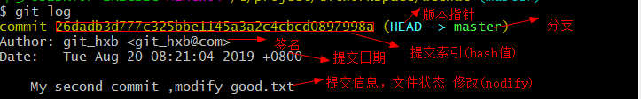

Git命令行操作之版本穿梭
我们先看一下命令，混个脸熟就可以，后面会有具体演示
- 查看版本日志命令
- git log #最完整的形式

- git log --pretty=oneline #简化展示内容

- git log --oneline #更加简化，相当于 git log --pretty=oneline 的缩写 ，只显示一部分hash值
- 且只会显示当前版本及该版本之前提交的版本信息记录

- git reflog #展示HEAD指针的信息 对我们版本的前进后退移动指针非常有用

1)HEAD@{移动到这个版本HEAD指针需要移动的步数}
- 版本前进后退命令
- git reset --hard <下述几种方式>
- 基于索引值操作 #常用 配合 git reflog 查看历史版本记录
- git reset --hard [局部索引值]
- 使用^符号 #只能后退,HEAD后面接几个^表示退后几个版本 ，配合git log --oneline查看历史记录比较清晰
- git reset --hard HEAD^
- 使用~符号 #只能后退 ,n是几就退后几个版本 ，配合git log --oneline查看历史记录比较清晰
- git reset --hard HEAD~n

- 如图移动到 26dadb3索引的位置，三种方法操作方式为
- 基于索引值操作 git reset --hard 26dadb3
- 使用^符号 git reset --hard HEAD^^^^
- 使用~符号 git reset --hard HEAD~4
- hard和soft以及mixed参数对比
- --soft 参数
- 仅仅在本地库移动HEAD指针，
- 暂存区不会同步
- 工作区不会同步
- --mixed 参数
- 在本地库移动HEAD指针
- 重置暂存区
- 工作区不会同步
- --hard 参数
- 在本地库移动HEAD指针
- 重置暂存区
- 重置工作区
- 实例
- 如下日志记录

- 使用git reset --soft HEAD^
- 此时本地库已经后移了一个版本，显得暂存区、工作区就更新了，图解


- 使用 git reset --mixed HEAD^
- 此时本地库，暂存区都会移动，图解


- 此时提示暂存区中存在change not staged for commit (未提交的更改)，与暂存区不一致

- 删除文件找回
- 准备
- 创建aaa.txt
- git add aaa.txt到暂存区
- git commit -m “ commit add.txt one” aaa.txt到本地库
- rm -aaa.txt # 删除工作区中aaa.txt
- 使用git add <filename> 或者git rm <filename>提交到暂存区

- git commit -m "delete aaa.txt " aaa.txt 提交到本地库
- git reflog 查看
- 可见每一次操作纪律都不会被删除，所以我们可以通过移动HEAD指针找回文件

- git reset --hard 8848bb1
- 找回，通过移动HEAD指针

- 比较文件
- git diff <filename> #工作区文件和暂存区文件比较
- 操作
- 使用vim编辑器为aaa.txt 添加一行“ diff diff”
- 使用git diff命令查看aaa.txt
- 显示工作区文件和暂存区文件的区别

- git diff HEAD <filename> #工作区文件和本地库当前版本文件作对比 ，当然HEAD也可以使用上述前进后退版本命令与指定版本比较
- 操作
- 使用vim编辑器为aaa.txt添加一行 “diff db”
- 使用git add aaa.txt 更新到暂存区
- 使用git diff HEAD^ aaa.txt 对比工作区文件和本地库文件当前版本的前一个版本的区别
- 显示工作区文件和本地库文件当前版本的前一个版本的区别